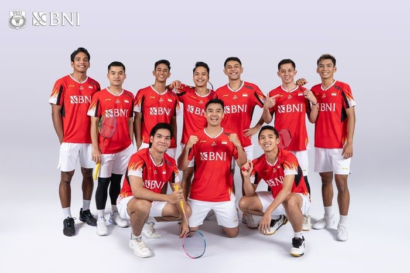
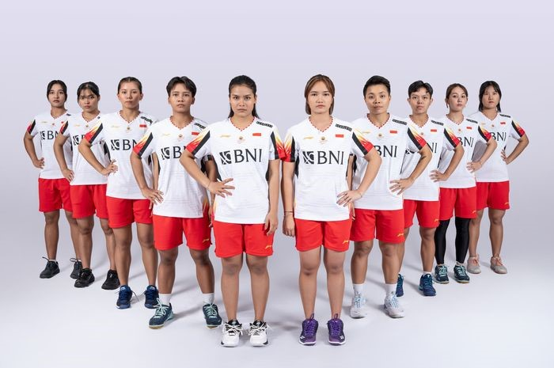
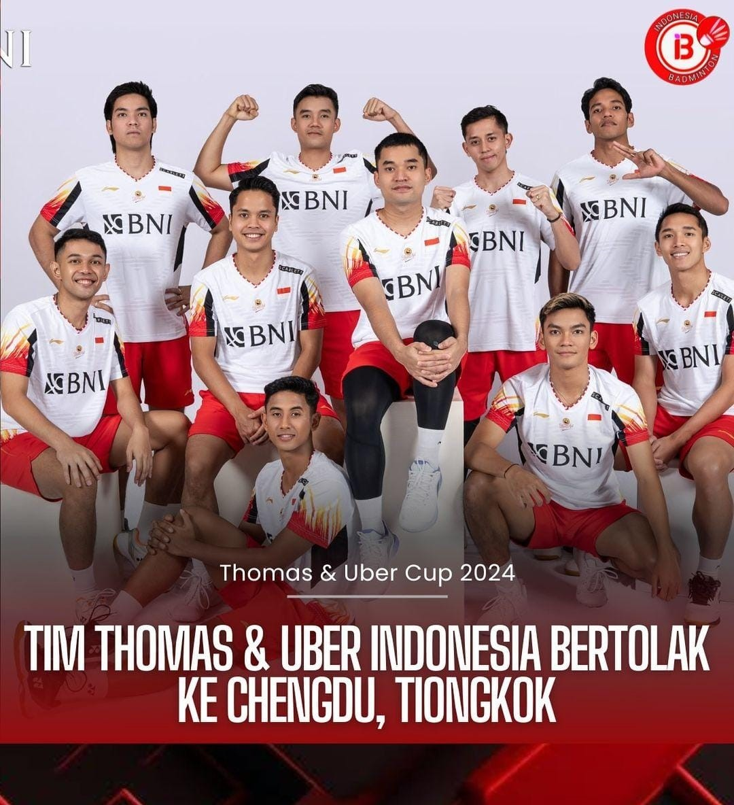

NEWS
Tim Thomas Cup dan Uber Cup Indonesia menjalani latihan perdana di Chengdu Hi Tech Zone Sports Center Gymnasium Kamis (25/4/2024) siang jelang Thomas Cup 2024 dan Uber Cup 2024.
Latihan Perdana Tim Thomas dan Uber Cup Indonesia: Tujuan: Adaptasi dan pengembalian kondisi fisik atlet. Jalannya Latihan: Latihan perdana berlangsung selama 3,5 jam di Chengdu Hi Tech Zone Sports Center Gymnasium. Tim Thomas dan Uber menggelar latihan gabungan di lapangan latihan dan arena pertandingan. Fokus latihan pada adaptasi dan pengembalian kondisi fisik. Kondisi para atlet terpantau baik dan semangat. Penekanan: Membangun kebersamaan tim menjadi kunci utama dalam turnamen beregu. Menjaga kesehatan atlet agar bisa fokus berlatih dan bertanding. Kendala: Jonatan Christie merasakan shuttlecock yang digunakan terlalu kencang dan dikhawatirkan mengganggu performa. Harapan: Tim pelatih dan panitia diharapkan dapat segera menyelesaikan problem shuttlecock. Para atlet bisa berlatih dan bertanding dengan maksimal.
Rentetan prestasi positif yang terjadi jelang Uber Cup 2024 membuat PBSI mendorong tim bulu tangkis putri Indonesia untuk mencetak prestasi lagi.
Mencapai babak semifinal Uber Cup 2024. Meraih medali. Tantangan: Persaingan ketat dengan tim unggulan seperti China, Korea Selatan, Jepang, dan Thailand. Kekurangan wakil di peringkat 10 besar dunia untuk tunggal putri dan ganda putri, selain Gregoria Mariska Tunjung dan Apriyani Rahayu/Siti Fadia Silva Ramadhanti. Harus mengandalkan pemain baru atau muda. Modal Positif: Performa apik Gregoria Mariska Tunjung, Apriyani Rahayu/Siti Fadia Silva Ramadhanti, Lanny Tria Mayasari/Ribka Sugiarto, dan Meilysa Trias Puspitasari/Rachel Allessya Rose. Semangat dan kekompakan tim. Strategi: Memasukkan Apriyani Rahayu/Siti Fadia Silva Ramadhanti sebagai ganda pertama. Memaksimalkan potensi pemain baru dan muda. Mempelajari strategi dan kelemahan tim lawan.
PICTURE

